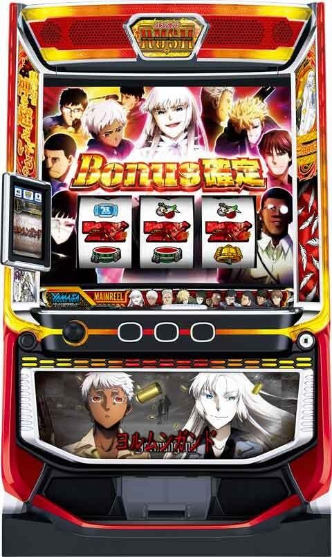
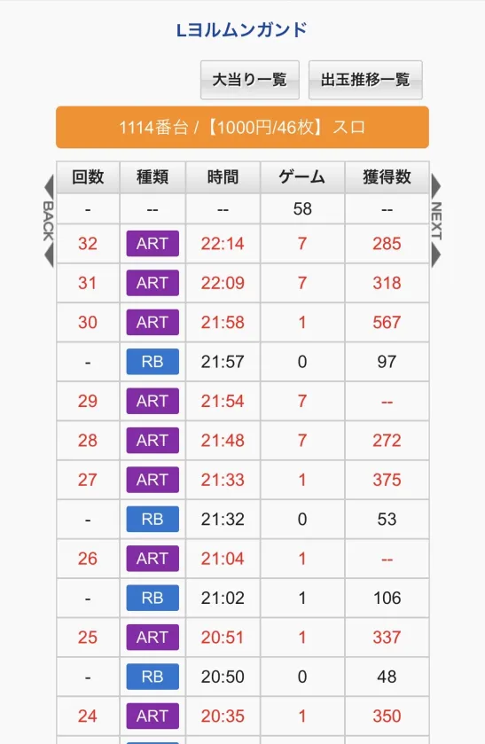
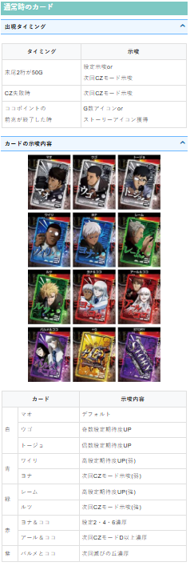
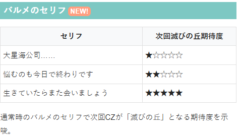
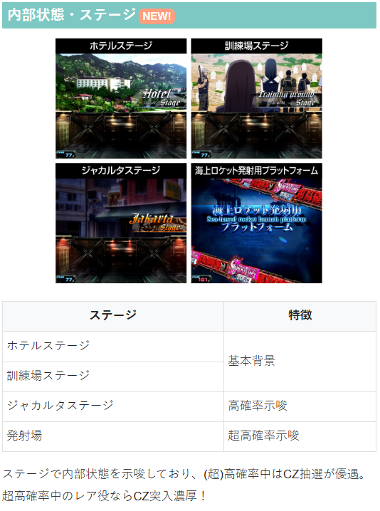

ヨルムンガンド

【天井情報】
AT間、最大999G＋α消化でATに当選。
設定変更後、恥の世紀終了後は天井が450G＋αに短縮。
【リセット判別】
不明
【有利区間について】
不明
狙い目
【リセット狙い】
190Gから
【ゲーム数天井狙い】
下位AT後 750Gから
上位AT後（恥の世紀終了後） 220Gから
※上位AT後を履歴から確認する方法は「その他→データ履歴」を参照
【ゾーン狙い】
※100.300Gのゾーンは規定G数到達時に超高確に関連するステージや帯が出なかったらやめ
100Gゾーン
下位AT後 80Gから
上位AT後 95Gから
300Gゾーン
280Gから
450Gゾーン
400Gから
※300Gゾーンは320-330G、450Gゾーンは470-480Gに当選分布が集中。
【ココポイント狙い】
950ptから
【示唆関連の押し引きについて】
カードの示唆
赤 アール＆ココ CZ当選まで？
紫 バルメ＆ココ CZ当選まで
バルメのセリフ
生きていたら… CZ当選まで
サブ液晶アイコン
G数上乗せ 30Gボーダーを下げる
ストーリー AT当選まで？400GくらいからAT当選まで？
【有利区間関連狙い】
不明
やめ時
AT終了後 引き戻しは見なくて良さそう。特に続行する要素無ければやめ。
その他
データ履歴
上位AT後（恥の世紀終了後）は22:14の様にART7Gの履歴で終わっていると思われる。
同一メーカーのモンキーターンと似た感じで、上位後は実ゲームと液晶ゲーム数が7Gくらいずれてると思われる。

カードの示唆

バルメのセリフ

内部状態・ステージ

参考元
基本情報
- メーカー: 山佐ネクスト
- 機械割: 97.8% 〜 113.9%
- 導入開始日: 2026年04月06日（月）
- ゲーム性概要: ●大人気アニメがついにスマスロで登場 ●通常時はレア役とココポイント契機のCZ成功でATに突入 ●通常時のボーナスはAT当選濃厚 ●AT「ヨルムンガンドラッシュ」は純増約2.4枚/G、初期ゲーム数50Gのゲーム数上乗せ型 ●AT中はレア役とココポイントで当選する「ストーリー」クリアで上乗せや特化ゾーンに突入 ●純増約5.0枚/Gの上位AT「ヨルムンガンドラッシュ パーフェクトオーダー」も搭載 ●エンディング後だけでなく、通常時のCZにも上位AT直行ルートが存在


打ち方
打ち方・小役
打ち方（小役狙い）
「最初に狙う絵柄」 左リールに黒BARを狙う。 目押しが必要なのはスイカ停止時のみ。それ以外は中・右リールともにフリー打ちでOKだ。
「スイカ停止時」 中リールにスイカを目押し（赤7目安）。右リールはこぼしがないのでフリー打ちで消化しよう。
「レア役の停止例」
変則押しはNG
押し順ナビなし時は左リール第1停止での消化を推奨する。
解析情報通常時
小役関連
小役確率
| 役 | 確率 |
|---|---|
| 弱チェリー | 1/84.9 |
| 強チェリー | 1/409.6 |
| 中段チェリー | 1/16384.0 |
| スイカ | 1/84.9 |
| チャンス目 | 1/218.5 |
※レア役合算確率は1/32.6
内部状態関連
CZ高確
内部状態
通常＜高確＜超高確の順にCZ当選期待度がアップ
超高確中のレア役はCZ濃厚
高確移行契機は弱チェリー・スイカ・AT終了後の抽選
超高確移行契機は弱チェリー・スイカ・100G消化ごとの抽選
［レア役契機］CZ高確移行率
| 役 | 高確へ | 超高確へ |
|---|---|---|
| 弱チェリー・スイカ | 29.69% | 0.39% |
［ゲーム数契機］CZ超高確移行率
| ゲーム数 | 移行率 |
|---|---|
| 100G | 100% |
| 200G | 5.08% |
| 300G | 100% |
| 400G | 5.08% |
| 500G | 50.00% |
| 600G | 5.08% |
| 700G | 25.00% |
| 800G | 5.08% |
| 900G | 25.00% |
（超）高確移行時は15Gの保障ゲーム数を獲得して、16G目から約25%で転落。高確滞在中に100Gに到達したなど、ゲーム数契機で高確→超高確へ移行した場合、元々残っていた高確ゲーム数が超高確の保証ゲーム数に加算される。
［ジャカルタ：高確示唆］
［発射場：超高確示唆］
ココポイント高確
ココポイントの獲得率が優遇された状態。滞在中は液晶左右に帯が出現する。
ココポイント高確の移行契機
100G消化ごとの抽選（超高確移行時を除く）
超高確終了後
CZ失敗後
AT終了後
ココポイント高確継続ゲーム数振り分け
| ゲーム数 | 振り分け |
|---|---|
| 15G | 89.84% |
| 30G | 10.16% |
モード
CZモード
| モード | 特徴 |
|---|---|
| モードA | デフォルト |
| モードB | ＋5Gの選択率がアップ |
| モードC | ＋5G・＋7Gの選択率がアップ |
| モードD | ＋5G・＋7Gの選択率が大幅アップ |
4種類のモードによって、次回のシューティングゾーン（CZ）中の玉の選択率が変化。 CZモードは末尾50G到達時やCZ失敗後にサブ液晶に出現するカードで示唆される。
CZモード振り分け
| モード | 振り分け |
|---|---|
| モードA | 69.5% |
| モードB | 25.0% |
| モードC | 5.1% |
| モードD | 0.4% |
ココポイント
ココポイント概要
毎ゲーム、成立役に応じてポイントを獲得していき、1000ptになるとCZを抽選。ポイントはAT中にも引き継がれ、AT中に1000ptに到達した場合はストーリーが抽選される。
ココポイント性能
| 獲得契機 | 毎ゲーム最低1pt加算（レア役は5pt以上） |
|---|---|
| 1000pt獲得時 | 通常時はCZ、AT中はストーリーを抽選 |
| 備考① | ポイントを獲得しやすい高確状態あり |
| 備考② | CZ非当選時の一部でアイコンを獲得 |
| 備考③ | AT中はつねにポイント獲得の高確状態 |
「アイコン」 1000pt到達→CZ非当選時の一部でアイコンを獲得。アイコンは「初期ゲーム数上乗せ」と「ストーリー」の2種類あり、獲得したアイコンはAT当選まで保持される。
アイコンの恩恵
| 初期ゲーム数上乗せ | AT初期ゲーム数を加算 |
|---|---|
| ストーリー | ストーリーをストック |
CZ非当選時のアイコンの獲得率
| アイコン | 獲得率 |
|---|---|
| 上乗せ | 3.13% |
| ストーリー | 0.78% |
上乗せとストーリーの両方に当選する可能性あり。AT開始までに複数回獲得した場合、アイコンの色が変化する。
有利区間移行時の初期ココポイント振り分け
| ポイント | 振り分け |
|---|---|
| 0pt | 25.0% |
| 100pt | 25.0% |
| 200pt | 19.9% |
| 300pt | 14.8% |
| 400pt | 10.2% |
| 500pt | 5.1% |
［通常中］役ごとの獲得ココポイント
| 役 | ポイント |
|---|---|
| 下記以外 | 1pt |
| リプレイ | 1pt |
| 押し順1枚ベル | 5pt |
| 弱レア役 | 20pt |
| チャンス目 | 50pt |
| 強チェリー | 100pt |
※通常中は成立役ごとの獲得ポイントは固定
［高確中］獲得ココポイント振り分け
| ポイント | その他 | リプレイ | 押し順1枚ベル |
|---|---|---|---|
| 5pt | 97.66% | ー | ー |
| 10pt | 0.39% | ー | 88.67% |
| 20pt | 0.39% | 62.5% | ー |
| 30pt | 0.39% | 18.75% | ー |
| 50pt | 0.39% | 6.25% | 5.08% |
| 100pt | 0.39% | 6.25% | 3.13% |
| 200pt | 0.39% | 6.25% | 3.13% |
| ポイント | 弱レア役 | チャンス目 | 強チェリー |
| 5pt | ー | ー | ー |
| 10pt | ー | ー | ー |
| 20pt | ー | ー | ー |
| 30pt | 50.00% | ー | ー |
| 50pt | 50.00% | ー | ー |
| 100pt | ー | ー | 100% |
| 200pt | ー | 100% | ー |
CZ抽選
CZ当選率 通常中
| 設定 | 弱レア役 | チャンス目 | 強チェリー |
|---|---|---|---|
| 1 | 調査中 | 10.16% | 25.00% |
| 2 | 調査中 | 11.33% | 26.95% |
| 3 | 調査中 | 14.06% | 32.03% |
| 4 | 調査中 | 16.02% | 34.38% |
| 5 | 調査中 | 16.41% | 34.77% |
| 6 | 調査中 | 16.80% | 35.16% |
高確中
| 設定 | 弱レア役 | チャンス目 | 強チェリー |
|---|---|---|---|
| 1 | 5.08% | 33.59% | 66.80% |
| 2 | 5.86% | 36.72% | 68.36% |
| 3 | 8.20% | 46.09% | 75.00% |
| 4 | 10.16% | 50.00% | 80.08% |
| 5 | 10.16% | 50.00% | 80.08% |
| 6 | 10.16% | 50.00% | 80.08% |
［超高確中］CZ当選率
| 役 | 当選率 |
|---|---|
| リプレイ | 約0.8%（約1/128） |
| レア役 | 100% |
CZ
CZ確率
| 設定 | 確率 |
|---|---|
| 1 | 1/194.2 |
| 2 | 1/188.6 |
| 3 | 1/175.7 |
| 4 | 1/169.4 |
| 5 | 1/167.8 |
| 6 | 1/167.2 |
シューティングゾーン
10G＋αのCZ。小役入賞で液晶に表示された玉を一つ獲得。玉の種類は「V」・「確率アップ」・「ゲーム数加算」の3種類で、「V」を獲得できればAT当選になる。獲得した玉はなくなるので、玉を獲得するほどAT期待度もアップする（Vを獲得しやすくなる）。
すべての玉を獲得した場合は、上位AT直行のチャンスとなる「パーフェクトチャレンジ」へ移行する。
シューティングゾーン性能
| 当選契機 | レア役での抽選、ココポイントMAX時の抽選 |
|---|---|
| 継続ゲーム数 | 10G＋α |
| 消化中の抽選 | 小役入賞で玉を獲得、「V」獲得でAT当選 |
| V獲得後 | 玉獲得ごとにATゲーム数を上乗せ （玉10個獲得orCZゲーム数消化で終了） |
| AT期待度 | 約43% |
| 玉10個獲得時 | パーフェクトチャレンジへ |
| 備考 | 当選した時点で成功確定の確定CZあり |
確定CZは自力でCZに失敗した場合に復活のような形で告知されるため、自力で成功させた場合は判別できない。
「玉の獲得」 小役入賞のたびにランダムで玉を獲得。もちろん、1回目の小役でVを取ってATが確定するケースもある。 初期の玉は10個なので、初期のAT確率は小役入賞時の1/10、1回小役入賞後は1/9、2回小役入賞後は1/8のように、玉を獲得するごとにAT期待度がアップしていく。
「ゲーム数加算」 獲得した玉がゲーム数加算の場合、CZの残りゲーム数が増加。 ゲーム数加算玉の種類は「＋3G」・「＋5G」・「＋7G」の3パターンだ。
「AT当選後はATゲーム数上乗せのチャンス」 Vを獲得した後もCZのゲーム数が残っている限り継続して、小役が入賞するたびにATのゲーム数を上乗せ。 すべての玉を獲得した場合は、CZゲーム数が残っていても パーフェクトチャレンジ へ移行する。
ATゲーム数上乗せの特徴
上乗せは基本的に5G
5Gでない場合は、 10G・20G・30G・50G・100Gから均等の割合で選択される
AT当選後・上乗せゲーム数振り分け
| 上乗せ | 振り分け |
|---|---|
| ＋5G | 98.1% |
| ＋10G | 0.4% |
| ＋20G | 0.4% |
| ＋30G | 0.4% |
| ＋50G | 0.4% |
| ＋100G | 0.4% |
パーフェクトチャレンジ
上位ATをかけた1G完結のCZで、レア役orリーチ目を引ければ上位AT直行。失敗してもBIGボーナスを経由してATへ突入する。
パーフェクトチャレンジ性能
| 当選契機 | シューティングゾーンで玉を10個獲得後、 AT中のストーリーでジャッジ3回成功時 |
|---|---|
| 継続ゲーム数 | 1G |
| 消化中の抽選 | レア役orリーチ目停止で上位AT突入 ※その他の役でも約1/256で成功 |
| 成功時 | ヨルムンガンドボーナス＋上位AT |
| 失敗時 | BIGボーナス＋AT |
| 備考 | タイトル表示ゲームでの強レア役は成功濃厚 |
消化中の上位AT当選率
| 役 | 当選率 |
|---|---|
| 下記以外 | 0.4% |
| レア役・リーチ目 | 100% |
※タイトル表示ゲームの強レア役は上位AT濃厚
滅びの丘
CZ当選時の一部で突入する特殊なCZ。 突入した時点でAT突入は濃厚で、10G間、成立役に応じて上位ATが抽選される。
滅びの丘性能
| 当選契機 | CZ当選時の約1/256（約0.4%） |
|---|---|
| 継続ゲーム数 | 10G |
| 消化中の抽選 | 成立役に応じた上位AT抽選 |
| 成功期待度 | 約50% |
| 成功時 | 上位ATへ |
| 失敗時 | ATへ |
上位AT当選率
| 役 | 当選率 |
|---|---|
| 下記以外 | 3.91% |
| スイカ | 50.0% |
| 弱チェリー | 50.0% |
| 強チェリー | 100% |
| チャンス目 | 100% |
| 中段チェリー | 100% |
| 押し順ナビ | 20.31% |
上位AT当選後・ストーリーストック当選率
| 役 | 当選率 |
|---|---|
| 下記以外 | 10.16% |
| レア役 | 100% |
成功確定後は、ストーリーのストックが抽選される。
確定CZ当選率
設定に応じて確定CZの当選率が変化。 自力でCZを成功させた場合、通常のCZと確定CZを判別することはできない。
天井
天井短縮当選率
設定変更後と恥の世紀終了後は天井が最大450G＋αに短縮。この2パターン以外にも上記の抽選で天井が短縮される。
解析情報ボーナス時
ヨルムンガンドラッシュ（AT）
AT概要
初期ゲーム数50Gのゲーム数管理型AT。レア役でのゲーム数直乗せやCZ成功による特化ゾーン、ボーナスなどを絡めてロング継続を目指すゲーム性だ。
AT性能
| 当選契機 | CZ成功時、通常時のボーナス直撃後 |
|---|---|
| 継続ゲーム数 | 50G＋α |
| 1Gあたりの純増 | 約2.4枚 |
| 消化中の抽選 | 高確移行、ゲーム数上乗せ、CZ、ボーナス ※AT中はつねにココポイント高確 |
| 備考 | AT終了後50G＋αは引き戻し状態に滞在 |
高確移行・ゲーム数上乗せ・ボーナス期待度
| 役 | 高確移行 | 上乗せ | ボーナス |
|---|---|---|---|
| 弱チェリー | ◎ | △ | △ |
| スイカ | ◎ | △ | △ |
| チャンス目 | ー | △ | ◯ |
| 強チェリー | ー | 濃厚 | ◎ |
| 中段チェリー | ー | 濃厚 | 濃厚 |
ストーリー期待度
| 役 | 通常 | 高確 | 超高確 |
|---|---|---|---|
| 弱チェリー | △ | ◯ | 濃厚 |
| スイカ | △ | ◯ | 濃厚 |
| チャンス目 | ◯ | ◎ | 濃厚 |
| 強チェリー | ◎ | 濃厚 | 濃厚 |
| 中段チェリー | 濃厚 | 濃厚 | 濃厚 |
AT中の内部状態・ステージ
AT中の内部状態
通常＜高確＜超高確の順にレア役でのストーリー当選率がアップ
超高確中のレア役はストーリー濃厚
高確以上移行時は15Gの保障ゲーム数あり
AT開始時の内部状態振り分け
| 状態 | 振り分け |
|---|---|
| 通常 | 75.00% |
| 高確 | 24.61% |
| 超高確 | 0.39% |
AT中の内部状態移行率
| 役 | 高確へ | 超高確へ |
|---|---|---|
| 弱チェリー・スイカ | 49.61% | 0.39% |
［基本ステージ］
［船上］ 高確示唆ステージ。 船上へ移行したゲームは高確以上濃厚だが、通常へ転落後も数ゲーム間、船上に滞在するケースあり。
［墓前］ 超高確示唆ステージ。
AT中のココポイント
AT中も、通常時と同様に成立役に応じてココポイントを獲得していき、1000pt到達時はストーリー（CZ）が抽選される。AT中はつねに高確状態で抽選されるため、通常時に比べて1000ptに到達しやすい。
［AT準備中］獲得ココポイント振り分け
| ポイント | 全役 |
|---|---|
| 10pt | 54.3% |
| 20pt | 25.0% |
| 30pt | 12.5% |
| 50pt | 6.3% |
| 100pt | 1.6% |
| 200pt | 0.4% |
［AT中］獲得ココポイント振り分け
| ポイント | その他 | ナビなしベル | ナビありベル |
|---|---|---|---|
| 1pt | 100% | ー | ー |
| 5pt | ー | 33.59% | ー |
| 10pt | ー | 33.20% | ー |
| 20pt | ー | 33.20% | 32.81% |
| 30pt | ー | ー | 32.81% |
| 50pt | ー | ー | 32.42% |
| 100pt | ー | ー | 1.17% |
| 200pt | ー | ー | 0.78% |
ストーリー当選率
| 1000pt到達回数 | 当選率 |
|---|---|
| 初回 | 約30% |
| 2回目以降 | 約10% |
ストーリー当選率
| 役 | 通常中 | 高確中 | 超高確中 |
|---|---|---|---|
| 下記以外 | ー | ー | 0.39% |
| スイカ | 0.39% | 50.0% | 100% |
| 弱チェリー | 0.39% | 50.0% | 100% |
| 強チェリー | 30.08% | 100% | 100% |
| チャンス目 | 10.16% | 75.00% | 100% |
| 中段チェリー | 100% | 100% | 100% |
「AT開始時のストーリー当選」
AT開始時にストーリーアイコンが出現する条件
通常時にココポイント経由でストーリーアイコン獲得時
CZをストックした状態でAT当選時（ストックはストーリーに変換）
AT準備中にココポイントがMAXになりストーリー当選時
引き戻し状態（AT後50G＋α）中にATを引き戻した場合の一部
滅びの丘・恥の世紀成功後のストーリー抽選当選時
AT開始時にストーリーアイコンが表示された場合、上記いずれかの抽選に受かっていたことが考えられる。
ボーナス当選率
| 役 | 当選率 |
|---|---|
| スイカ | 0.78% |
| 弱チェリー | 0.78% |
| 強チェリー | 33.59% |
| チャンス目 | 22.27% |
| 中段チェリー | 100% |
ボーナス当選時のBIGとREGの比率は1：1。中段チェリーはヨルムンガンドボーナス濃厚だ。
AT後50G間・AT引き戻し当選率
| 役 | 当選率 |
|---|---|
| 全役 | 約0.05%（約1/2048） |
AT終了後50G＋α間は通常のCZ抽選などに加えて、ATの引き戻しを抽選。当選した場合は高確率でストーリーをストックする。 50G以内にCZに当選した場合、CZの消化ゲーム数分が延長（＋αはこのゲーム数）されて、CZ経由でATに当選した場合も高確率でストーリーストック。
CZに複数回当選した場合など、引き戻し状態のゲーム数が残っていてもAT後100Gに到達した時点で引き戻し状態は終了する。
ゲーム数上乗せ当選率
| 上乗せ | 弱レア役 | チャンス目 | 強チェリー | 中段 チェリー |
|---|---|---|---|---|
| ＋10G | ー | ー | 90.2% | ー |
| ＋20G | ー | ー | 4.3% | ー |
| ＋30G | ー | ー | 4.3% | ー |
| ＋50G | ー | ー | 0.4% | ー |
| ＋100G | 0.4% | 0.4% | 0.4% | 98.4% |
| ＋200G | 0.4% | 0.4% | 0.4% | 1.6% |
強チェリーと中段チェリーは上乗せ濃厚。 弱チェリー・スイカ・チャンス目は当選率が低い代わり、当選時は＋100G以上濃厚となる。
ボーナス
ボーナス概要
ボーナスは3種類で、いずれも消化中のレア役でATゲーム数上乗せ濃厚。 おもな当選契機はAT中の抽選とパーフェクトチャレンジ終了後で、通常時にボーナスに当選した場合はAT突入も濃厚になる。
ボーナス性能
| 当選契機 | リプレイ・レア役での抽選、リーチ目停止時、 パーフェクトチャレンジ終了後など |
|---|---|
| 獲得枚数 | REG：約50枚、BIG：約100枚、 ヨルムンガンドボーナス：約150枚 |
| 消化中の抽選 | レア役成立で上乗せ濃厚、 ヨルムンガンドボーナス中はベルの約50%で上乗せ |
| 備考 | 上位AT中のボーナスはBIG以上 |
「REGボーナス」
「BIGボーナス」
「ヨルムンガンドボーナス」
ボーナス当選タイミングごとの恩恵
| タイミング | 恩恵 |
|---|---|
| 通常時 | AT当選 |
| CZ中 | 上位AT＋上乗せ100G |
| AT準備中 | 高確移行抽選 |
| AT中 | 高確移行抽選 |
| ストーリー前半 | 10Gを再セット |
| ストーリー後半 | ジャッジ成功＋以降のジャッジも成功 |
| ヨルムンガンドチャンス | ストーリーをストック |
| ラピッドファイアタイム | 約50%で昇格 |
| ワイリズエクスプロージョン | 約25%で継続率90%へ昇格 |
| フォーワールドピース | 10Gを再セット＋上乗せ100G |
| キャスパーモード | 10Gを再セット |
| 上位AT準備中 | ゴッドオブパーフェクトオーダー |
［BIG・REG］ゲーム数上乗せ当選率
| 上乗せ | ベル | スイカ | 弱チェリー | |
|---|---|---|---|---|
| ＋10G | ー | 99.2% | 99.2% | |
| ＋20G | ー | ー | 0.4% | |
| ＋30G | ー | ー | 0.4% | |
| ＋50G | ー | ー | ー | |
| ＋100G | 抽選あり | 0.4% | ー | |
| ＋200G | 抽選あり | 0.4% | ー | |
| 上乗せ | チャンス目 | 強チェリー | ||
| ＋10G | ー | ー | ||
| ＋20G | 98.4% | 89.1% | ||
| ＋30G | 0.4% | 5.1% | ||
| ＋50G | 0.4% | 5.1% | ||
| ＋100G | 0.4% | 0.4% | ||
| ＋200G | 0.4% | 0.4% |
［ヨルムンガンドボーナス］ゲーム数上乗せ当選率
| 上乗せ | ベル | スイカ | 弱チェリー | |
|---|---|---|---|---|
| ＋5G | 48.4% | ー | ー | |
| ＋10G | 0.8% | 99.2% | 99.2% | |
| ＋20G | 0.4% | ー | 0.4% | |
| ＋30G | 0.4% | ー | 0.4% | |
| ＋50G | ー | ー | ー | |
| ＋100G | 抽選あり | 0.4% | ー | |
| ＋200G | 抽選あり | 0.4% | ー | |
| 上乗せ | チャンス目 | 強チェリー | ||
| ＋5G | ー | ー | ||
| ＋10G | ー | ー | ||
| ＋20G | 98.4% | 89.1% | ||
| ＋30G | 0.4% | 5.1% | ||
| ＋50G | 0.4% | 5.1% | ||
| ＋100G | 0.4% | 0.4% | ||
| ＋200G | 0.4% | 0.4% |
ストーリー（CZ）＆ヨルムンガンドチャンス
ストーリー
前半10Gと後半3Gの2部構成のCZ。 前半ではレア役成立や狙えカットイン時の青BAR停止で対応役が増加。後半は3回のジャッジが発生して、対応役を引くことができれば成功、成功回数に応じて報酬が変化する。
ストーリー性能
| 当選契機 | レア役・ココポイントMAX時の抽選、 キャスパーモードの報酬、 通常時にストーリーアイコン獲得後 |
|---|---|
| 継続ゲーム数 | 前半10G＋後半3G |
| 前半中の抽選 | 狙えカットイン・レア役で後半の対応役を増加 |
| 後半中の抽選 | 対応役を引けば成功となり報酬を獲得 ※3回成功でパーフェクトチャレンジも獲得 |
| 成功期待度 | 約60% |
| 備考 | 成功回数（1～3回）に応じて報酬の期待度が変化 |
「前半パート」 狙えカットイン発生時は逆押しで全リールに青BARを狙って、青BARが止まったリールの対応役が増加。レア役成立時は全リールの対応役が1つずつ増加する（どの対応役が増えるかは抽選）。 これを10G間繰り返して、後半の期待度を上げていくゲーム性だ。
青BAR停止確率
| 青BAR | 確率 |
|---|---|
| 1個停止 | 1/3.5 |
| 2個停止 | 1/35.8 |
| 3個停止 | 1/10922.7 |
| トータル | 1/3.2 |
※左・中・右リールのどこに止まるかの振り分けは均等
対応役の種類
左1stナビ・中1stナビ・右1stナビ・リプレイの5種類
レア役成立時は対応役不問で成功濃厚
「後半パート」 後半では3回（左・中・右リールの順に1回ずつ）のジャッジが発生し、各リールに設定された対応役もしくはレア役を引けばCZ成功。ジャッジの成功回数（1〜3回）に応じて、報酬の期待度が変化する。 ジャッジ終了後は、ヨルムンガンドチャンスで報酬を決める。
ジャッジ成功期待度
| 獲得対応役 | 期待度 |
|---|---|
| ナシ | 3.06% |
| 左1stナビ | 9.47% |
| 中1stナビ | 30.81% |
| 右1stナビ | 24.15% |
| リプレイ | 16.77% |
| 左1stナビ・中1stナビ | 37.22% |
| 左1stナビ・右1stナビ | 30.55% |
| 左1stナビ・リプレイ | 23.18% |
| 中1stナビ・右1stナビ | 51.89% |
| 中1stナビ・リプレイ | 44.52% |
| 右1stナビ・リプレイ | 37.85% |
| 左1stナビ・中1stナビ・右1stナビ | 58.30% |
| 左1stナビ・中1stナビ・リプレイ | 50.92% |
| 左1stナビ・右1stナビ・リプレイ | 44.26% |
| 中1stナビ・右1stナビ・リプレイ | 65.60% |
| 左1stナビ・中1stナビ・右1stナビ・リプレイ | 100% |
※ボーナス当選による成功を考慮しない期待度
ヨルムンガンドチャンス
CZ成功後に移行する報酬決定ゾーン。CZのジャッジ成功回数に応じて報酬が抽選される。
ヨルムンガンドチャンス性能
| 移行契機 | CZ成功後 |
|---|---|
| 継続ゲーム数 | 1G |
| 消化中の抽選 | CZの成功回数に応じて報酬を決定、 レア役成立時は上位の恩恵を獲得!? |
ストーリー成功回数ごとの報酬振り分け 1回成功時
| 報酬 | 振り分け |
|---|---|
| 上乗せ20G | 50.00% |
| RFT | 50.00% |
2回成功時
| 報酬 | 振り分け |
|---|---|
| 上乗せ30G＆RFT | 75.00% |
| 上乗せ30G&WX | 25.00% |
3回成功時
| 報酬 | 振り分け |
|---|---|
| 上乗せ50G＆WX | 98.44% |
| 上乗せ50G＆FWP | 1.56% |
※3回成功時はパーフェクトチャレンジにも突入 ※RFT…ラピッドファイアタイム、WX…ワイリズエクスプロージョン、FWP…フォーワールドピース
「報酬決定」 2択の形で液晶に表示された報酬のいずれかを獲得（レア役を引けば右側の上位報酬を獲得!?）。 報酬決定時に中段チェリーを引いた場合は、ストーリー成功回数に応じた上乗せ＋ヨルムンガンドボーナス＋フォーワールドピース＋ストーリーストックを獲得できる。
増加対応役の振り分け
| 対応役 | 青BAR停止 | スイカ 弱チェリー | チャンス目 強チェリー |
|---|---|---|---|
| リプレイ | 25.0% | 25.0% | 25.0% |
| 左ナビ | 39.5% | 39.5% | 25.0% |
| 中ナビ | 15.2% | 15.2% | 25.0% |
| 右ナビ | 20.3% | 20.3% | 25.0% |
「同じ役に複数回当選した場合のルール」
同じ対応役が選択された時のルール
左ナビ→リプレイ→右ナビ→中ナビ→左ナビ…の順に、 1つズレた対応役が加算
内部的に同じ対応役が選択された場合、別の対応役を選択（同じ対応役が被って選択されることはない）。 上記画像で説明すると、すでに左リールは中ナビが対応役となっているため、再び中ナビが選択された場合は1つズレて左ナビが対応役になる。
「対応役0個の時の特殊抽選」
対応役0個の時の獲得対応役振り分け（右リール）
| 対応役 | 振り分け |
|---|---|
| リプレイ | 25.0% |
| 左ナビ | 39.5% |
| 中ナビ | 15.2% |
| 右ナビ | 20.3% |
対応役を1つも獲得できずに前半パートを終えた場合、後半パートの3G目（右リール）に対応役を1つ獲得する。
特化ゾーン
キャスパーモード
毎ゲーム発生するミッションをクリアするたびに報酬を獲得できる特化ゾーン。小役の引き次第で多くの恩恵を獲得できる。
キャスパーモード性能
| 当選契機 | ベル5連以上時（※）の約1/256（約0.4%） |
|---|---|
| 継続ゲーム数 | 10G |
| 消化中の抽選 | ミッションをクリアするたびに報酬を獲得 |
| 備考 | 滞在中のボーナス当選時は10Gを再セット |
※押し順1枚ベルやベルこぼしも含む（ベルが5G以上連続で成立すれば抽選）
「ミッション」
ミッションの内容
リプレイを引け
リプレイorベルを引け
ベル以外を引け
役不問で成功濃厚
指示された小役を引ければ、液晶に表示された報酬を獲得。ミッション内容（小役の種類・報酬）は1Gごとに切り替わる。
ミッション振り分け
| ミッション | 振り分け |
|---|---|
| リプレイを引け | 43.75% |
| リプレイorベルを引け | 25.00% |
| ベル以外を引け | 25.00% |
| 役不問で成功濃厚 | 6.25% |
ミッション成功時の報酬振り分け
| 報酬 | その他 | 役不問で成功濃厚時 |
|---|---|---|
| 上乗せ＋10G | 19.92% | ー |
| 上乗せ＋20G | 19.92% | ー |
| 上乗せ＋30G | 10.16% | 50.00% |
| ストーリー | 50.00% | 50.00% |
ラピッドファイアタイム
1セット5GのST型特化ゾーン。レア役or狙えカットイン時に青BARが止まれば上乗せかつ、5Gが再セットされる。 通常のラピッドファイアタイムに加え、ラピッドファイアタイムαとラピッドファイアタイムβという上位版もある。
ラピッドファイアタイム性能
| 当選契機 | ストーリーの恩恵 |
|---|---|
| 継続ゲーム数 | 5G/セットのST型 |
| 消化中の抽選 | レア役・青BAR停止で上乗せ＆5Gを再セット |
| 平均上乗せ | 60G |
| ボーナス当選時 | 約50%で昇格（通常→α、α→β） |
「狙えカットイン」 どこかのリールに青BARが止まれば上乗せ。複数停止するパターンもある。
「ラピッドファイアタイムα」
ラピッドファイアタイムα性能
| 当選契機 | ボーナスでの昇格 |
|---|---|
| 継続ゲーム数 | 7G/セットのST型 |
| 消化中の抽選 | レア役・青BAR停止で上乗せ＆7Gを再セット |
| 継続期待度 | 約95% |
「ラピッドファイアタイムβ」
ラピッドファイアタイムβ性能
| 当選契機 | ボーナスでの昇格 |
|---|---|
| 継続ゲーム数 | 7G/セットのST型 |
| 消化中の抽選 | レア役・青BAR停止で上乗せ＆7Gを再セット |
| 継続期待度 | 約95% |
| 備考 | 上乗せされるゲーム数が2倍 |
青BAR停止確率
※左・中・右リールのどこに止まるかの振り分けは均等
ワイリズエクスプロージョン
継続率管理型の上乗せ特化ゾーンで、継続抽選に漏れるまで毎ゲームで上乗せが発生する。
ワイリズエクスプロージョン性能
| 当選契機 | ストーリーの恩恵 |
|---|---|
| 継続ゲーム数 | 1G＋ラストチャンス1G/セット |
| 消化中の抽選 | リプレイ・レア役は上乗せ濃厚、 上乗せ非当選でラストチャンスへ |
| 継続率 | 約75～90% |
| 平均上乗せ | 100G |
| ボーナス当選時 | 継続率昇格のチャンス（約25%で90%へ昇格） |
継続率振り分け
| 継続率 | 振り分け |
|---|---|
| 約75% | 82.55% |
| 約77% | 12.50% |
| 約85% | 1.56% |
| 約90% | 0.39% |
※継続率は1G目および2G目の継続抽選を平均した数値
1G目は全役で上乗せを抽選していて、上乗せ当選で継続濃厚（リプレイとレア役は上乗せ濃厚）。 1G目の抽選に漏れた場合はラストチャンスへ移行し、継続率による継続抽選がおこなわれる。ラストチャンス中もリプレイとレア役は継続（上乗せ）濃厚だ。
「爆弾が爆発すれば上乗せ」
「ラストチャンス」 上乗せ非当選だった場合はラストチャンスへ移行。ここで上乗せを獲得できればワイリズエクスプロージョンが継続する。
フォーワールドピース
狙えカットイン発生時に停止した青BARの位置に対応した報酬を獲得できる特化ゾーン。 報酬にはゲーム数上乗せだけでなく各種特化ゾーンもあるので、引き次第で特化ゾーンの大量ストックにも期待できる。
フォーワールドピース性能
| 当選契機 | ストーリーの恩恵 |
|---|---|
| 継続ゲーム数 | 10G |
| 狙えカットイン | 青BARが停止した位置に対応した報酬を獲得 |
| 弱レア役 | 一番左の報酬を獲得 |
| 強レア役 | すべての報酬を獲得 |
| ボーナス当選時 | 上乗せ100G＋10Gを再セット |
報酬パターン
| パターン | 報酬 |
|---|---|
| パターンA | WX/RFT/上乗せ |
| パターンB | FWP/WX/RFT |
※RFT…ラピッドファイアタイム、WX…ワイリズエクスプロージョン、FWP…フォーワールドピース
報酬パターン振り分け
| パターン | 振り分け |
|---|---|
| パターンA | 89.84% |
| パターンB | 10.16% |
「狙えカットイン」 上記画像の場合、右リールに青BARが止まれば上乗せを獲得。右＆中リールなら上乗せ＆ラピッドファイアタイムを獲得できる。 レアパターンだが、報酬にフォーワールドピースが含まれているケースもあり、獲得できればフォーワールドピースがループする。
青BAR停止確率
※左・中・右リールのどこに止まるかの振り分けは均等
［青BAR停止時］上乗せゲーム数振り分け
| 上乗せ | 1個停止 | 2個停止 | 3個停止 |
|---|---|---|---|
| ＋5G | 90.6% | ー | ー |
| ＋10G | 8.6% | 96.1% | ー |
| ＋20G | 0.8% | 3.1% | ー |
| ＋30G | ー | 0.8% | ー |
| ＋100G | ー | ー | 100% |
※ラピッドファイアタイムβ中は上乗せゲーム数が2倍
［レア役］上乗せゲーム数振り分け
| 上乗せ | スイカ | 弱チェリー | チャンス目 | |
|---|---|---|---|---|
| ＋10G | 99.2% | 96.9% | ー | |
| ＋20G | ー | 1.6% | 98.8% | |
| ＋30G | ー | 1.6% | 0.4% | |
| ＋50G | 0.4% | ー | 0.4% | |
| ＋100G | 0.4% | ー | 0.4% | |
| 上乗せ | 強チェリー | 中段チェリー | ||
| ＋10G | ー | ー | ||
| ＋20G | ー | ー | ||
| ＋30G | 89.8% | ー | ||
| ＋50G | 5.1% | ー | ||
| ＋100G | 5.1% | 100% |
※ラピッドファイアタイムβ中は上乗せゲーム数が2倍
ラピッドファイアタイムは5Gの上乗せが発生するまで終了の可能性ナシ。消化中にボーナスを引いた場合は、再び5Gの上乗せが発生するまで終了しない。
ワイリズエクスプロージョンの上乗せ抽選
「上乗せ抽選の流れ」 1G目は成立役を参照して上乗せを抽選。漏れた場合は2G目（ラストチャンス）で継続抽選がおこなわれる。 突入時は1G目の継続ストックを2つ持ってスタートするため、最低でも2回は上乗せが発生。1G目に自力で上乗せした場合、ストックは消費されない。
「1G目の上乗せ抽選」
［リプレイorレア役］上乗せゲーム数振り分け
| 上乗せ | リプレイ | スイカ | 弱チェリー |
|---|---|---|---|
| ＋10G | 100% | 99.2% | 96.9% |
| ＋20G | ー | ー | 1.6% |
| ＋30G | ー | ー | 1.6% |
| ＋50G | ー | 0.4% | ー |
| ＋100G | ー | 0.4% | ー |
| 上乗せ | チャンス目 | 強チェリー | 中段チェリー |
| ＋10G | ー | ー | ー |
| ＋20G | 98.8% | ー | ー |
| ＋30G | 0.4% | 89.8% | ー |
| ＋50G | 0.4% | 5.1% | ー |
| ＋100G | 0.4% | 5.1% | 100% |
［全役］上乗せ当選率
| 上乗せ | 当選率 |
|---|---|
| 非当選 | 43.8% |
| ＋10G | 50.0% |
| ＋20G | 3.9% |
| ＋30G | 1.6% |
| ＋50G | 0.4% |
| ＋100G | 0.4% |
※ストックを消費した場合の上乗せは＋10G
［リプレイorレア役］による抽選と［全役］での抽選を両方おこない、上乗せゲーム数の多い方が実際の上乗せゲーム数になる。
「2G目の抽選」
［リプレイorレア役］上乗せゲーム数振り分け
※リプレイ・レア役は1Gと同様に上乗せ濃厚
継続率による継続当選率
| モード | 当選率 |
|---|---|
| モードA（約75%） | 約16.8% |
| モードB（約77%） | 約25.0% |
| モードC（約85%） | 約50.0% |
| モードD（約90%） | 約66.8% |
※継続時は＋10Gを獲得
2G目もリプレイとレア役は上乗せ濃厚。その他の役の場合は継続率に応じた継続抽選がおこなわれる。
恥の世紀（上位CZ）
上位CZ概要
エンディング後や上位AT後に突入する、期待度約50%のCZ。毎ゲームの成立役に応じて上位ATを抽選していて、レア役は成功濃厚。強レア役なら上位AT＋特化ゾーンも濃厚となる。
上位CZ性能
| 当選契機 | エンディング後、上位AT後 |
|---|---|
| 継続ゲーム数 | 4G |
| 上位CZ開始時 | 設定に応じた成功抽選 |
| 消化中の抽選 | 成立役に応じた成功抽選、レア役は成功濃厚 （強レア役は成功＋特化ゾーン） |
| 成功期待度 | 約50% |
| 備考 | 恥の世紀終了後は天井を450G＋αに短縮 |
「最終ゲームのジャッジ成功で上位ATへ」 上位ATの当否は最終ゲームで告知。道中で赤文字が出ていればチャンスアップになる。
上位CZ中・上位AT当選率
| 役 | 当選率 |
|---|---|
| レア役以外 | 6.25% |
| レア役 | 100% |
まず、恥の世紀開始時に成功を抽選。漏れた場合は消化中の成立役に応じて成功への書き換えを抽選する。
ヨルムンガンドラッシュパーフェクトオーダー（上位AT）
上位AT概要
純増が約5.0枚/Gにアップし、消化中に当選するボーナスはBIG以上が濃厚になる。 その他の基本的なゲーム性は通常のATと同じだ。
上位AT性能
| 当選契機 | パーフェクトチャレンジ成功後、 滅びの丘成功後、上位CZ成功後、 |
|---|---|
| 継続ゲーム数 | 50G＋α |
| 1Gあたりの純増 | 5.0枚 |
| 消化中の抽選 | 高確移行、ゲーム数直乗せ、CZ、ボーナス |
| 備考 | ボーナス当選時はBIG以上 |
| 終了後 | 恥の世紀へ |
「白7のダブル揃いはゴッドオブパーフェクトオーダー」 上位ATは白7を揃えてスタート。 ダブルで揃えばゴッドオブパーフェクトオーダーを経由する。
ゴッドオブパーフェクトオーダー
ゴッドオブパーフェクトオーダー概要
上位AT開始時の一部で突入する上乗せ特化ゾーンで、白7揃いが継続する限りゲーム数を上乗せし続ける。 平均上乗せは310Gと強力だ。
ゴッドオブパーフェクトオーダー性能
| 当選契機 | 上位AT開始時の一部（白7のダブル揃い） |
|---|---|
| 継続ゲーム数 | 白7揃いが続く限り継続 |
| 平均上乗せ | 310G |
演出情報
通常時
ステージの示唆
| ステージ | 示唆 |
|---|---|
| ホテル | デフォルト |
| 訓練場 | デフォルト |
| ジャカルタ | 高確示唆 |
| 発射場 | 超高確示唆 |
| ワーニングオーダーモード | CZorAT前兆 |
［ホテル］
［訓練場］
［ジャカルタ］
［発射場］
［ワーニングオーダーモード］
カードごとの示唆
特定のタイミングでサブ液晶にカードが出現（サブ液晶をタッチ）。カードの種類で設定・CZモード・次回CZの種別などを示唆する。 バルメ＆ココは次のCZが滅びの丘濃厚なので、CZ当選まで打ち続けたい。
［カード一覧］
セリフ演出：バルメの滅びの丘示唆
通常時のセリフ演出にバルメが登場した場合はセリフの内容に注目。セリフパターンで次のCZが滅びの丘である期待度を示唆している。
滅びの丘に期待できるセリフパターン
| セリフ | 期待度 |
|---|---|
| 大星海公司…… | 低 |
| 悩むのも今日で終わりです | 中 |
| 生きていたら また会いましょう | 濃厚!? |
CZ示唆演出
| 演出 | 法則 |
|---|---|
| リールにREADY? | リプレイ時に発生でCZ濃厚 |
［リールにREADY?］
CZ
演出別・小役入賞期待度
| 演出 | 期待度 |
|---|---|
| SHOOTINGあおり | 14.4% |
| スポットライト | 17.6% |
| SHOOTING点灯 | 31.7% |
| 弾丸 | 41.7% |
| ノイズセリフ | 73.3% |
| 稲妻 | 5.5% |
| 稲妻＋SHOOTINGあおり | 100% |
| キャラルーレット | キャラによってV獲得期待度が変化 |
演出法則
| 演出 | 法則 |
|---|---|
| SHOOTINGあおり | ● ハズレを含む全役対応 |
| スポットライト | ● 1人：全役対応 ● 2人：小役入賞以上 ● 3人：レア役以上 |
| SHOOTING点灯 | ● 押し順ベル以上 |
| 弾丸 | ● 押し順ベル以上 |
| ノイズセリフ | ● 押し順ベル以上 ● レア役にも期待 ● 「見たいでしょ～」は小役入賞以上濃厚 ● 「一発でも～」は強チェリーorチャンス目対応 ● 押し順ナビと複合すればV獲得濃厚 |
| 稲妻 | ● ハズレor押し順（6択）ベルorチェリー対応 ● リプレイ成立時はV獲得濃厚 |
| 稲妻＋ SHOOTINGあおり | ● チェリー対応 ● リプレイ成立時はV獲得濃厚 |
| キャラルーレット | ● ヨナ＜ルツ＜レームの順にV獲得のチャンス ● 15枚ベル成立時にルツ登場でV獲得濃厚 ● レームはV獲得濃厚 |
| 押し順ナビ＋演出複合 | ● V獲得期待度75%以上 |
| 下パネル消灯 | ● V獲得orボーナス濃厚 |
| 下パネル消灯＋演出複合 | ● ボーナス濃厚 |
| ！ナビ | ● V獲得濃厚 |
［SHOOTINGあおり］
［スポットライト］
［SHOOTING点灯］
［弾丸］
［ノイズセリフ］
ノイズセリフ・セリフの期待度序列
| セリフ | 序列 |
|---|---|
| 今は私を～ | 低 |
| 見たいでしょ～ | ↓ |
| 一発でも～ | ↓ |
| 世界は人の心～ | 高 |
［稲妻］
［キャラルーレット：ヨナ］
AT関連
キャスパーモード示唆
「セリフ演出：キャスパー」 AT中にキャスパーのセリフ演出が発生すると、キャスパーモードの抽選状態（ベルが5連以上している）滞在濃厚。 セリフ内容にも注目で、「恐怖は…恐怖は君を〜」ならチャンス、「今日の夜はパーティ〜」ならキャスパーモード当選に期待できる。
AT中の演出法則
| 演出 | 法則 |
|---|---|
| 下パネル消灯 | 3桁上乗せorボーナス濃厚 |
特化ゾーン
ラピッドファイアタイム中の演出
| 演出 | 示唆 | |
|---|---|---|
| キャラ演出 | トージョ | デフォルト |
| キャラ演出 | ルツ | 上乗せ以上濃厚 |
| キャラ演出 | バルメ | ＋30G以上濃厚 |
| キャラ演出 | レーム | ＋50G以上濃厚 |
| キャラ演出 | アール | ボーナス当選濃厚 |
| 狙えカットイン | 青 | デフォルト |
| 狙えカットイン | 赤 | ＋20G以上濃厚 |
| ココミサイル | 上乗せ時は＋50G以上濃厚 | |
| セリフ演出 | 白 | デフォルト |
| セリフ演出 | 赤 | 上乗せ以上濃厚 |
| セリフ演出 | ケロット柄 | BIG以上濃厚 ※REG時はαorβへ昇格濃厚 |
| セリフ演出 | HCLI | αorβへ昇格濃厚 |
［キャラ演出］ 選択されるキャラで期待度が変化。
［狙えカットイン：青］
［狙えカットイン：赤］
［セリフ演出］ 白文字以外ならチャンス！
キャスパーモード中の神超ランプ
「神超ランプ」 レバーON時に神超ランプが点滅すればミッション成功濃厚だ。
裏ボタン
前兆ステージ突入画面での本前兆期待度示唆
ワーニングオーダーモード突入画面でPUSHボタンを押すと、セリフで本前兆期待度を示唆する。BGMがアニメの主題歌に変化するとAT当選濃厚だ。
セリフ・BGMでの示唆
| セリフ・BGM | 期待度 |
|---|---|
| ルツ「俺の出番だぜ」 | 低 |
| ヨナ「問題ない」 | ↓ |
| 南「いい感じじゃん」 | ↓ |
| キャスパー「君はこれから～」 | 高 |
| バルメ「聞こえる～」 | 滅びの丘濃厚 |
| アニメ主題歌 | AT当選濃厚 |
450Gの前兆でルツ「俺の出番だぜ」が発生すれば天井に到達!?
ねじれココランプ
さまざまなタイミングで第3停止ボタンを長押しして、ココランプが光れば恩恵獲得濃厚となる。
ココランプ点灯時の恩恵
| 状態 | 恩恵 |
|---|---|
| 通常時450Gから始まる 前兆の連続演出最終ゲーム | AT濃厚 |
| シューティングゾーンの小役入賞時 | V獲得濃厚 （約75%で点灯） |
| 滅びの丘中 | 次ゲームでフリーズ濃厚 |
| パーフェクトチャレンジ中 | 成功濃厚 |
| AT中の連続演出最終ゲーム | ボーナスorストーリー濃厚 |
| ヨルムンガンドチャンス中 | 上位報酬獲得濃厚 |
| 恥の世紀最終ゲーム （なんとかしてくれよ！ココ！の表示ゲーム） | 成功濃厚 （約75%で点灯） |
ストーリーの違和感モード変更
プロローグ（前半パート）の最終ゲームでPUSHボタンを長押しすると、後半パートのジャッジ中に違和感が発生すれば成功濃厚となる「違和感モード」に変更することができる。
違和感モード
| 変更方法 | 前半パート最終ゲームでPUSHボタンを長押し |
|---|---|
| 効果 | 後半パートのあおり中に違和感発生で成功濃厚 （MAX BETが虹に光ればボーナス当選濃厚） |
演出法則
| 違和感パターン | 演出 |
|---|---|
| 違和感演出 | 下パネル点滅 |
| 違和感演出 | PUSHが一瞬発光 |
| 違和感演出 | PUSH左右ランプ点滅 |
| 違和感演出 | サブ液晶上限ランプ点滅 |
| 違和感演出 | 羽ランプ点灯 |
| 違和感演出 | MAXBET 白点滅 |
| 違和感演出 | リールロック中の逆回転が長い（※） |
| 特殊違和感演出 | MAXBETが虹点灯 |
| 特殊違和感演出 | ショコラーデボイス「何かいいこと～」 |
※違和感モード以外でも発生する可能性あり
違和感演出は成功濃厚、特殊違和感演出はボーナス当選濃厚になる。